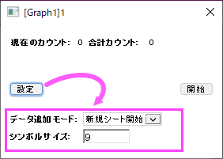

作図と移動、データポイントの削除
Draw-Delete-DataPoint
このツールは、仮のデータを作成してシミュレーションするのに役立つ機能を提供します。
データポイントを描画
マウスで作図ツールを使って、2D散布図を手動で描きます。対応するXY座標値の非表示のワークシートが同時に作成されます。
グラフウィンドウがアクティブな状態で、マウスで作図ツールのボタン をクリックすると小ダイアログが開きます。
をクリックすると小ダイアログが開きます。

Note: デフォルトではデータ追加モードとシンボルサイズのオプションは表示されていません。設定ボタンをクリックすると展開できます。
データ追加モード
このオプションを使用して、描画したデータポイントの保存方法を指定できます。
- 新規シート開始がデフォルトで選択されています。これは、データポイントが新しいシートに保存されることとなります。
- 追加もしくは1行開けて追加を選択することもできます。これは、このツールを再度開始すると、データポイントが同じシートに追加されることになります。Note: 完了ボタンをクリックすると、現在の描画ルーチンが停止します。
シンボルサイズ
シンボルサイズでは、データポイントが描画されるときの大きさを指定することができます。デフォルトでは9になっています。
グラフとワークシート間の切り替え
一度ワークシートが作成されると、グラフまたはワークシートというボタンがパネルに表示され、ウィンドウを切り替えることができます。
詳しい内容は、「マウスで作図」を使ってデータプロットを作成をご覧ください。この手順は2D 散布図のみ有効です。
データポイントの移動
データ：データポイントを移動コマンドを使用して、2D散布図のデータポイントを1つずつレイヤ内の任意の場所に移動してデータプロットを再構成することができます。詳細は、『データポイントを削除する』をご覧ください。
Note:
- 2D折れ線グラフがアクティブな状態でデータ：データポイントを移動メニューを選択すると、アクティブな線のプロットタイプが散布図に変更されます。
- 縦棒グラフや横棒グラフなど、その他のプロットタイプの場合は、このメニューを選択すると、これらのデータポイントの移動を有効にするかどうかを確認するメッセージが表示されます。同じXデータを共有するマルチパネルグラフでも同じです。
- Origin 2023以前は、データポイントを移動ツールを使用してデータポイントを移動すると、データポイントはデフォルトのシンボル（小さな黒い四角）に変わりました。 Origin 2023以降、データポイントを移動する場合、Tabキーを1回押すだけで、ポイントのスタイルをソースプロットと同じに保つことができます。Tabキーを再度クリックすると、ポイントをデフォルトのシンボルとして表示する以前のモードに戻ります。
- データ点数が500を超える場合は、計算をスムーズに行うために、以前のモードでデータポイントを移動することをお勧めします。
|
データポイントの削除
不良データポイントの削除メニューコマンドを使用して、2D散布図から個別のデータポイントを削除できます。 ワークブックのデータはそれに応じて調整されます。これらは、2D散布図 でのみ動作します。 詳細は、『データポイントを削除する』をご覧ください。